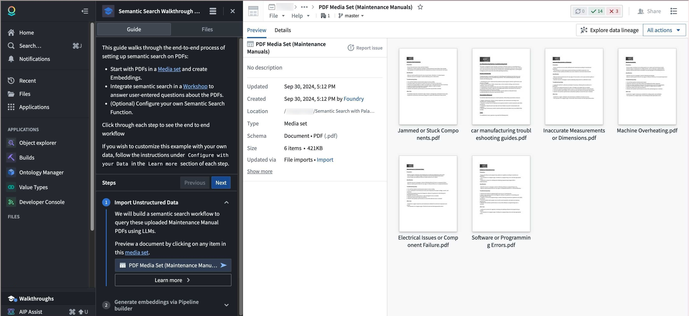

Walkthroughs enables users to generate custom, step-by-step tutorials that guide end-users through an application or workflow. With Walkthroughs you can provide custom on-demand resources that transform how your end-users learn, making it possible to leverage self-guided tutorials that are tailored to your organization's needs.
To access a walkthrough, users must have Viewer access to the walkthrough resource. If a user does not have permission to the resources referenced in the walkthrough, they will not be guided to that resource. Instead, they will see a message that there is a resource they do not have access to view.
Anyone with Editor permissions on a Project can create a walkthrough in that given Project.
When viewing a resource with an associated walkthrough, the Walkthroughs option will appear in the workspace sidebar. A walkthrough appears only on the resources it references directly, and not on resources embedded within them. To surface a walkthrough in a Carbon workspace, reference the workspace itself and add the modules inside it as secondary resources, as described in Walkthrough types.
To access the walkthrough, select the Walkthroughs option in the workspace sidebar. When selecting Next or Previous on any given step, the Walkthroughs panel will automatically redirect you to the appropriate resource. Select Learn more to access documentation attached to each step.

You can view all related walkthrough resources by selecting the Files tab, and see all recent or available walkthroughs in the top panel. To pause or resume a walkthrough, you can close or open the Walkthroughs panel when the relevant resource is open.